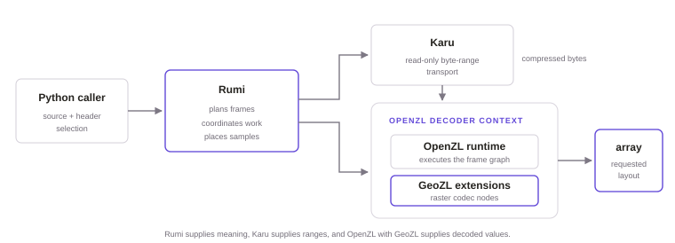
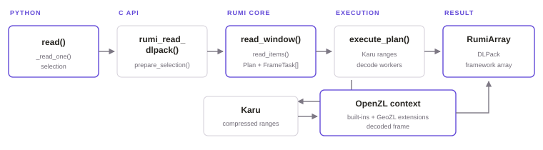
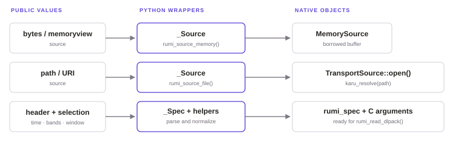
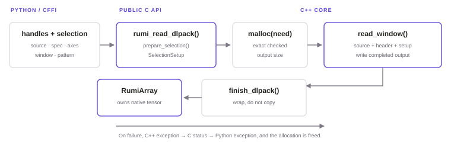
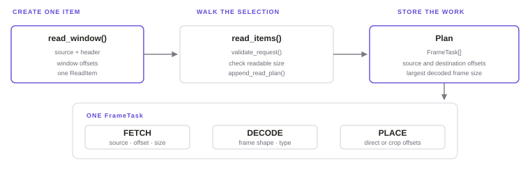
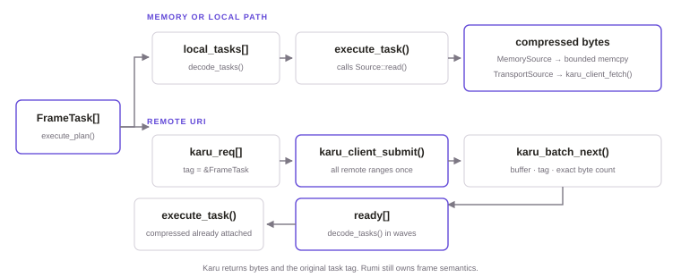
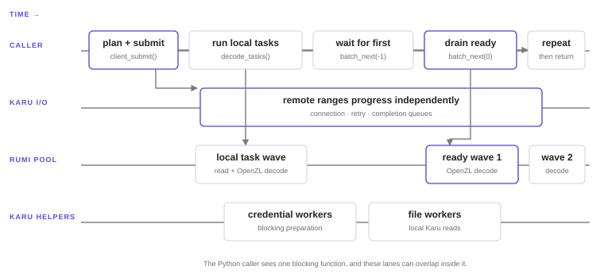
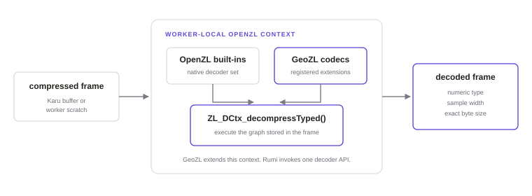
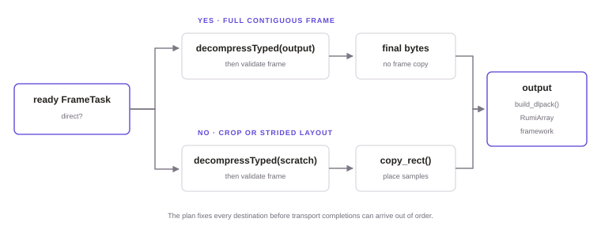
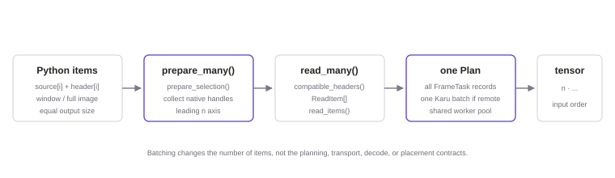

How Rumi reads
- This page follows one
rumi.read()call through the source, from Python to a framework tensor.
No knowledge of Rumi, Karu, OpenZL, GeoZL or C++ is assumed. The call normalizes its arguments, plans the frames it needs, fetches and decodes them, and hands the result to the framework.
The first nine sections follow one complete read. The last two cover batches and the source files.
The parts of a read
Rumi is a raster format and reader. It understands array dimensions, tiles, bands, time positions and output layout. It hands byte transport and frame decompression to smaller libraries with narrower jobs.

| Rumi | The orchestrator. It maps a tensor selection to compressed frames and maps decoded samples to an output array. |
|---|---|
| Karu | A read-only transport library. Given a locator, an offset and a length, it fetches those bytes from memory, a local file, HTTP or supported object storage. |
| OpenZL and GeoZL | OpenZL is the graph-based compression runtime. GeoZL extends that runtime with raster-aware codec nodes registered into the same decoder context. |
Terms used on this page
| Source | The bytes of one .rumi file, given as memory, a path or a URI. |
|---|---|
| Header | The small external index that tells Rumi the array shape, the frame layout and the compressed byte counts. |
| Selection | The requested time positions, bands, spatial window and output axis pattern. |
| Frame | One independently compressed unit. Rumi fetches and decodes whole frames, then keeps only the requested samples. |
| FrameTask | The record Rumi keeps in memory for one frame. It says where the frame lives, how large it is and where its samples must go. |
| Completion | The report from Karu that one requested range finished, with its status, byte count, buffer and caller tag. |
How to read the code names. read() is a function. TransportSource::read() is a method of the C++ type TransportSource. A name such as rumi_source* is an opaque native handle from the point of view of Python. Python can keep or release it but never looks inside the C++ object behind it.
One read from end to end
Suppose a model asks for one spatial window, one time position and two bands. The public call is small because the implementation carries those choices through every layer.
chip = rumi.read(
"scene.rumi",
header,
time=[2],
bands=[1, 3],
window=(512, 256, 256, 256),
framework="torch",
)
The boundary to keep in mind. The external header tells Rumi which frames hold the request and where their bytes begin. It does no I/O and no decoding. The specification defines that arithmetic, and this page explains the functions that run it.
The Python call
rumi.read() is synchronous. It returns a finished array or raises an exception. Its arguments describe three different things, the bytes to read, the samples to keep and the array to return.
| argument | meaning | what the code does with it |
|---|---|---|
source | A bytes-like object, a local path or a remote URI | Wraps it as MemorySource or TransportSource |
header | The external index returned by write() or rebuilt by info() | Parses the shape, dtype, tile layout, frame axes and compressed sizes |
time, bands | Zero-based lists or half-open (start, stop) ranges, or None for all | Validates them and converts them to the one-based indices of the C API |
window | (row, column, height, width), or None for the whole image | Checks the bounds and converts it to offsets and sizes |
pattern | The order of the output axes, such as band, time, row and column | Compiles the shape and byte strides before any frame runs |
framework | numpy, torch, jax, tensorflow or dlpack | Chooses an exact consumer, and dlpack leaves a RumiArray |
The data file and the header are separate on purpose. Rumi can plan exact byte ranges from the small header before it touches the data source, which may be large. A caller that already has the header can start a remote read without first downloading metadata from the data object.
read() in bindings/python/rumi/_read.py parses the external header, validates the selection and resolves the framework consumer before it opens the source. The native handle wrappers live in bindings/python/rumi/_native.py. The CFFI declarations and library loading stay apart in _ffi.py.
spec = _Spec(header)
consumer = resolve_framework(framework, spec.fields.dtype)
times = _resolve_axis(time, "time", spec.fields.time_count)
bands = _resolve_axis(bands, "bands", spec.fields.samples_per_pixel)
window = _resolve_window(window, spec.fields.image_length, spec.fields.image_width)
pattern = _resolve_pattern(pattern)
arr = _read_one(_Source(source), spec, times, bands, window, pattern)
return consumer.convert(arr)
_Source opens anything. Only memory sources bypass Karu. A local path and a remote URI both enter through TransportSource, and Karu works out which transport they need._resolve_axis() expands a half-open range when needed, validates the zero-based band and time indices from Python and converts them to the one-based convention of the C API. A null pointer with a count of zero means "all". _resolve_window() turns (row, column, height, width) into the row and column offsets and sizes that C expects.
_Source owns the native source handle. For input in memory, the C++ MemorySource only borrows the Python buffer, so _Source._keep keeps that buffer alive until the native source is released. _Spec calls rumi_spec_parse(), has ffi.gc() free the native object, and exposes the parsed fields that Python needs for its own bounds checks.
Why the checks run twice. Python rejects mistakes with the familiar TypeError and ValueError messages. The C API validates again because it is a public boundary that can be called without Python. The core then checks the invariants that depend on the format, next to the code that uses them.
The C boundary
CFFI, the bridge from Python to C, calls the public C API in core/src/capi.cpp. That API exposes only plain handles, integers, pointers and status codes. It never exposes C++ classes or exceptions.

SelectionSetup carries the selected one-based axes, the compiled LayoutPlan and the exact output byte count. The core gets a destination that is already valid and large enough.prepare_selection() does the pointer and count checks, resolves the selected axes, compiles the output layout and computes the size without overflow, all in one place. rumi_read(), where the caller supplies the storage, and rumi_read_dlpack(), where Rumi allocates it, both use this same step. The two entry points cannot quietly disagree about the shape or the bytes they need.
The read path allocates exactly need bytes, calls read_window(), and only then wraps the allocation with finish_dlpack(). Every failure path frees the allocation. The dtype registry supplies the decoded byte width and the exact DLPack code, independently of the logical width stored in the file.
Exceptions stop at the boundary. capi_call() catches C++ exceptions and records a Rumi status and the error text. Back in Python, _check() maps that status to the matching Python exception. No C++ exception or half-built tensor crosses the C ABI.
The frame plan
With the shape and the storage settled, the core turns the logical selection into one FrameTask for every compressed frame that can contribute samples.

FrameTask is the unit that planning, transport, decoding and placement share. Its tag lets a Karu completion return to the exact task that asked for it.The frame_unit of the header records a choice made when the file was written. A frame may hold several bands or times, or those axes may select separate frames. append_read_plan() walks an axis only when that axis changes the frame index. Selected planes that live in the same frame stay in one task, so there is no separate fetch for each plane inside that frame.
The function walks only the tile rows and columns that intersect the window. For each band and time combination it needs, it calls Header::frame_index() and then gets the compressed range from frame_offset() and frame_byte_count(). It also works out in advance where every selected plane goes in the output.
idx = h.frame_index(tile_row, tile_col, band, time)
task.offset = h.frame_offset(idx)
task.compressed_size = h.frame_byte_count(idx)When a whole decoded frame maps byte for byte to one contiguous region of the output, the task stores a direct destination. Otherwise it stores crop coordinates and strides for a later copy_rect(). No transport decision has been made yet.
Where the format math went. The tile grid, the frame-unit rules, the frame-index formula and the prefix sum that rebuilds the offsets are in the specification, with their diagrams. What matters here is that those calculations become concrete FrameTask records before any frame bytes are requested.
Byte ranges from Karu
Karu is a read-only transport library. Rumi gives it a locator, an offset and a length, and Karu returns exactly that byte range. It knows nothing about bands, tiles, frames or output arrays.
A locator is how Karu describes where bytes live, whatever the transport. karu_resolve() turns a local path, an HTTP URL or a supported cloud URI into a locator once, when TransportSource::open() runs. Reads are positional rather than cursor-based, so independent frame tasks can request different parts of the same object at the same time.

karu_resolve() has already resolved the path or URI. At execution time, remote_locator() decides whether the task joins the remote batch.execute_plan() asks each source for remote_locator(). A memory source returns no locator and later does a bounded memcpy. A local TransportSource also joins local_tasks, and its Rumi worker calls the blocking helper karu_client_fetch(). Only a truly remote locator takes the asynchronous batch route.
For remote work, Rumi creates one karu_req per frame and stores &task in its caller-controlled tag. It submits the whole remote workload before it decodes the local tasks. Seeing every range at once lets Karu schedule and merge compatible requests while the CPU workers of Rumi stay busy.
karu_batch_next() returns completions as they become ready. Rumi checks the Karu status and the exact byte count, recovers the FrameTask from the tag, attaches the compressed buffer, and sends the ready tasks to the decoder in waves. The I/O threads of Karu keep filling the next wave while Rumi decodes the current one.
| Karu knows | The locator, the byte offset and count, the destination or returned buffer, the status and the caller tag. |
|---|---|
| Rumi knows | Why that range is a frame, how it must decode and where its selected samples belong. |
One session per read, one compatible client per calling thread. read_items() creates a TransportSession for the operation. The session asks for a Karu client only when transport is needed. A thread-local cache can reuse that client on later reads while its configuration still matches. Reads from memory alone never start the transport runtime.
Concurrency under a blocking call
There is no await rumi.read(...). The Python call blocks until every requested sample is ready. The asynchronous work happens underneath that call. Karu moves the remote I/O forward while Rumi workers read local frames and decode the ones that have arrived.

decode_tasks(local_tasks) uses the Rumi pool. Ready remote frames then decode in waves while Karu keeps filling the next wave.The threads of a read
| Calling thread | Builds the plan, submits the remote batch, waits for Karu completions, groups the frames that are ready and returns the final result. |
|---|---|
| Karu I/O threads | Own the active remote transfers, connection reuse, retries and completion delivery. There are four per client by default, set by KARU_IO_THREADS, and they keep running while Rumi decodes. |
| Rumi worker pool | When enabled, runs execute_task(). That covers positional local or memory reads when needed, OpenZL decompression, validation and output placement. |
| Karu helper workers | Keep the blocking work of preparing local files and cloud credentials away from the remote event loops. |
karu_batch_next(batch, -1) blocks the coordinator until the first completion is available. Rumi then calls karu_batch_next(batch, 0) again and again to drain everything already ready without waiting. That group becomes one decoder wave. The loop repeats until Karu reports that the batch has ended.
The Rumi thread pool is shared by the whole process and is created only when a plan has more than one frame task. Its size is one unless RUMI_NUM_THREADS or rumi.set_num_threads() changes it. Without a pool, Executor::run() runs the same tasks one after another on the calling thread. The first read that actually runs in parallel fixes the pool size, so set it before that read. Each call submits its own ThreadPool::Batch and waits only for that batch.
Concurrency does not change the answer. append_read_plan() fixes every destination before execution. Workers take one tile row of an output plane at a time, which keeps frames that touch the same pages together. Remote completions may arrive in any order, and their write-group IDs restore the grouping before decode.
Frame decoding
OpenZL is the compression runtime that understands the graph stored inside a compressed frame. GeoZL is an extension library that adds raster transform nodes to that runtime. They form one decoding path, not two competing decoders.
An OpenZL frame carries the graph and the parameters needed to rebuild its values. A graph here is a recipe of connected transform nodes, where the output of one operation becomes the input of the next. Built-in nodes do general operations, and GeoZL adds nodes designed for geospatial rasters. Rumi does not choose or rebuild that graph during a read. It hands the compressed frame to OpenZL and checks the result against the Rumi header.
struct WorkerState {
ZL_DCtx* dctx = ZL_DCtx_create();
WorkerState() {
geozl_register_decoders(dctx);
}
};
geozl_register_decoders(dctx) is the integration point. After registration, OpenZL can run graphs that contain both built-in nodes and GeoZL raster nodes.WorkerState in core/src/plan.cpp is declared thread_local, so every worker thread gets its own instance the first time it decodes. The worker reuses its OpenZL context and its compressed and decoded scratch buffers for later tasks, but no two threads share that mutable decoder state. Frames stay independent. The reuse only saves rebuilding the runtime and reallocating scratch for every frame.
execute_task() calls ZL_DCtx_decompressTyped(), then checks that OpenZL produced numeric samples of the expected fixed width and the exact decoded byte size. Boolean frames get one more check, that every decoded byte is zero or one. Only a validated frame reaches output placement.
Missing codec errors stay specific. If OpenZL reports an unknown custom transform, Rumi asks geozl_owns_ctid() whether that identifier belongs to GeoZL. The error can then tell "update GeoZL" apart from an unknown third-party OpenZL codec.
The output array
The output buffer and all its strides were fixed before the plan ran. A completed frame therefore already knows whether it can decode straight into its final place or needs a temporary decoded frame.

copy_rect() copies whole rows when both layouts are contiguous. When the output pattern uses a different pixel stride, it copies sample by sample.The output pattern sets the shape and the strides. For example, "t y x b" puts time first and band last. Another order changes where a task writes without changing which source frames it needs. This is why compile_layout() runs before append_read_plan().
rumi_read_dlpack() allocates the exact output size before it calls the core. finish_dlpack() wraps that allocation in a versioned DLPack tensor. DLPack is a small protocol for ownership and metadata that array libraries share. It describes the address, shape, strides, dtype and device, without copying the decoded array into a second buffer owned by the framework.
Python wraps the native tensor in RumiArray. Calling numpy(), torch(), jax() or tensorflow() hands that allocation over through DLPack. RumiArray.__dlpack__() allows the handover exactly once, and if no consumer takes it, the wrapper frees the native tensor itself. Framework compatibility is checked before any source is opened.
Completions may arrive in any order. Output placement does not depend on the order frames complete. Every task already carries its destination offsets, so a fast remote frame and a local frame can finish in either order without changing the returned array.
Several images in one plan
read_many() does not loop over read(). It pairs each source with its header and, when given, its window. Then it sends the whole batch through one read_items() call and one execution plan. Without windows, it reads every image in full.
batch = rumi.read_many(
["north.rumi", "south.rumi"],
[north_header, south_header],
windows=[(0, 0, 256, 256), (512, 0, 256, 256)],
bands=[1, 3],
framework="torch",
)
k * n_stride. The final tensor keeps the input order even though its frames may complete in another order.compatible_headers() requires the same tile size, band count, dtype, time count and frame-axis behavior. A batch without windows also needs equal image dimensions. With windows, the source images may differ in size, but every window must have the same height and width so the results fit one rectangular tensor.
The combined plan is what makes a batch fast. One Karu submission sees the remote frame requests of every item, local and memory work share the same Rumi pool, and every ready frame can decode without waiting for earlier items to finish.
The read path by file
These are the files to open, in this order, when changing or debugging a read.
| file and what it owns | main symbols |
|---|---|
bindings/python/rumi/_read.pyValidation of the public arguments and the order of the read | read, read_many, _read_one |
bindings/python/rumi/_framework.pyFramework compatibility and the exact DLPack transfer | resolve_framework, _FRAMEWORKS |
bindings/python/rumi/_dlpack.pyThe DLPack capsule and ownership of the native tensor | RumiArray, __dlpack__ |
bindings/python/rumi/_native.pyHandles to the native source and the parsed header | _Source, _Spec |
bindings/python/rumi/_ffi.pyC declarations, library loading, ABI checks and status mapping | ffi, lib, _check |
core/src/capi.cppC validation, output layout, allocation and DLPack wrapping | prepare_selection, rumi_read_dlpack, prepare_many |
core/src/read.cppFrame planning, source checks, Karu batching and execution order | append_read_plan, read_items, execute_plan |
core/src/source.cppMemory sources, Karu locator resolution and transport sessions | MemorySource, TransportSource, TransportSession |
core/src/plan.cppThe OpenZL context of each worker, GeoZL decoder registration, frame validation and placement | WorkerState, execute_task, copy_rect |
core/include/rumi/thread_pool.hppWorkers shared by the process and batches scoped to one operation | ThreadPool, ThreadPool::Batch |
karu/src/runtime/engine.cppRemote event loops, local-file workers, credential workers and completion queues | Engine::submit, io_loop, file_loop, credential_loop |
geozl/core/src/decoder_registry.cRegistration of the GeoZL raster codecs into an OpenZL decoder context | geozl_register_decoders, geozl_owns_ctid |
openzl/decompress/decompress2.cOpenZL graph decompression, reached through its public decoder API | ZL_DCtx_decompressTyped |
The shortest debugging route. If the wrong frames are requested, start in append_read_plan(). If ranges fail, start in execute_plan() and source.cpp. If compressed bytes arrive but decoding or placement fails, start in execute_task(). If the native result is correct but the Python object fails, start in RumiArray.
The specification has the binary layout and the frame-index formulas. The examples show the public API in use.